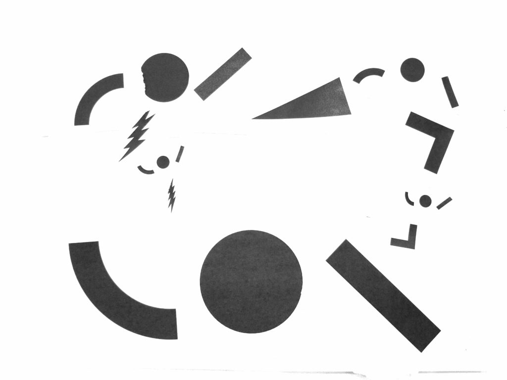

inPUBLIC is a festival to reclaim public spaces throughout Boston.
inPUBLIC is a 3-day festival in September that will take across public sites in Upham’s Corner and downtown Boston. The purpose of this festival is to activate spaces for public-making Рwhere familiar and unfamiliar people can come together to engage with familiar and unfamiliar activities. Through forms of verbal discourse, such as panels and discussions, as well as other forms of discourse, such as art-making, play, and food, we hope to spark new ideas, conversations about difficult issues, and a stronger sense of a right to the city and its public-in-theory spaces.
Planning a multi-site, multi-day festival requires a lot of thinking on spatial, temporal, and material factors. Within each site, the festival also requires thinking on how the energies of different activities and visual pieces will intersect — what kind of atmosphere will the festival create at different points in time? Given that many factors can change throughout the stages of planning this festival, we wanted to create something that could be used modularly throughout the planning process. As a result, we created a Festival Planning Toolkit that addresses 3 aspects of the planning process: figuring out the spatial layout of the activities at each site, creating a timeline for when different activities will take place, and understanding the logistical needs and impact of each activity.
The Festival or Counter Atmospheres is a 4-day event in June that will take across three public sites in Boston: Upham’s Corner, Downtown Crossing, and Copley Square. The purpose of this festival is to activate spaces for public-making Рwhere familiar and unfamiliar people can come together to engage with familiar and unfamiliar activities. Through forms of verbal discourse, such as panels and discussions, as well as other forms of discourse, such as art-making, play, and food, we hope to spark new ideas, conversations about difficult issues, and a stronger sense of a right to the city and its public-in-theory spaces.
Disclaimer: I haven‚Äôt met with my community partner yet — I‚Äôm going to update this once I meet with them and have more context!
I am partnering with the Design Studio for Social Intervention (ds4si) to co-design the Festival of Counteratmospheres, taking place in June. ds4si has a wealth of experience co-designing interventions, installations, events, workshops, and more with communities in Boston. From delving into their past projects, I can see that they are actively engaging with the principles of design justice. I am really looking forward to learn from them and to share any useful skills and resources I might have.
In their past projects, knowledge is constructed with the communities at stake, rather than constructed for communities. In fact, many projects start with an open question that invites responses from the community, like visioning workshops. Sometimes, these responses are turned into “productive fictions”, like Public Kitchen. The knowledge that is produced with the community can then be disseminated in the forms of physical zines or digital resource guides, like the Social Emergency Response Center Manual. This then provides a framework for organizations and individuals outside ds4si to create their own projects and events.
Values
ds4si prioritizes marginalized communities — the groups that make up the horizontal public. Their design process reflects this prioritization, by both inviting and meeting community members where they‚Äôre at in all stages of the process (from ideation to execution). Accessibility is a key concern emphasized in ds4si‚Äôs projects, reflected in choices of meeting spaces, event spaces, and materials.
Stakeholders
So far, I understand the stakeholders of this project to be the community members participating in the organization of the event and the event itself, the ds4si organizing team, and myself. I see myself benefiting from this project by having the opportunity to observe and practice co-design principles in action.
Outcomes
This festival will create multiple counteratmospheres that can serve as spaces for the Boston community to convene and to generate more ideas for the future.
I participated in Hack for Inclusion this weekend, and this is what I found to be successful and lacking from a Design Justice perspective:
What was successful:
The event focused on using design to sustain and empower our communities.
This was reflected in the challenges that the Hackathon centered around.
Everyone felt like an expert.
On my team, everyone had meaningful ideas and skills to contribute. And this includes people we reached out to for interviews.
What could be more engaged:
The event could enable more community-led and controlled outcomes.
Apart from user interviews, we had no interaction with the actual community we were working on a solution for. And that was part of the issue — it felt as though we were building for a community rather than building with a community.
The event could further encourage engaging with existing community solutions.
During the research stage, the emphasis was completely on identifying problems rather than identifying existing solutions. During the prototyping stage, the emphasis seemed to be on building something new and novel.
The event could place more emphasis on “change as emergent from an accountable, accessible, and collaborative process” rather than as a point at the end of a process.
At the end of the hackathon, everyone presented their “solutions.” And while the organizers did encourage people to continue building and refining their solutions, there was no accountability otherwise.
This past weekend, I participated in Hack for Inclusion. While I’ve done coding hackathons before, this was my first design hackathon. This hackathon was much more structured than ones I’ve done in the past, and it was also split into two days rather than being an overnight affair. Before the hackathon, we got to rank three questions we were most excited to tackle. I ended up being assigned to my first choice (which was not the case for everyone, so I’d say there were varying levels of enthusiasm on my team), which was fostering inclusive commercial development in Somerville.
Throughout the hackathon, all the teams were essentially guided through the “human-centered design” process, from user research to prototyping. For many steps of the process, we were given around 30 minutes to an hour (with the exception of prototyping, for which we had several hours). Our team was also assigned a mentor, who was a government employee working on development in the City of Somerville. During the process, she offered us feedback and gave us more context about Somerville from her own experiences of working with developers and business owners.
‚ÄúTalk less, make more!‚Äù ü§î
Each step of the design process felt very rushed, and my team definitely struggled to reach consensus at times. We all came from very different backgrounds career-wise (academia, law, consulting, non-profit) and identity-wise. I really appreciated getting to meet and collaborate with this diverse group, but the social friction was high at times. This reminded me of Lily Irani’s piece last week, on how hackathons often promote low-friction environments where you can quickly come to consensus and build, build, build. Funnily enough, every time our team took some time to come to a consensus, someone on my team tried to emphasize the “move fast and break things” mantra.
Brainstorming ideas with my team
Because we were given, by far, the most time to prototype, I think this led most teams, including ours, to focus on building a solution rather than taking time to understand the problem. I felt that the short hour we had to conduct and reflect user interviews was not enough (and I also took issue with the fact that we were encouraged to cold call business owners for interviews…1) do these business owners have time for spontaneous interviews on a Friday? 2) without prior relationships and trust building, how much information would they be willing to disclose? 3) there was no accountability in terms of us following up with them and sharing the potential solution we were working on). After some brainstorming and a lot of conversation, we realized how little time we had left, so we quickly decided to focus our solution on building a local community fund that could support minority business owners who need capital (and might be excluded from traditional forms of capital like bank loans) to grow their businesses. I thought this solution was promising, but we got caught up in the rush of feeling like we had to build a ‚Äúproduct.‚Äù So we ended up framing the idea as a mobile app (which in retrospect, was a lazy solution that won out over other ideas we had for in-person relationship building between business owners and the city…and totally perpetuated technochauvinism). I distinctly remember someone from my team saying that we needed a ‚Äúflashy‚Äù solution to impress the judges. ü§¶ü誂Äç‚ôÄÔ∏èSo, yes, we ended up presenting this app called SomerFund:
SomerFund, a shiny new app
Overall, I learned a lot from this event. Was our solution a success? Not really. Did we really contribute meaningfully to minority business owners? No. Was this overall event successful? I think that will only become more clear after following up with teams in later months to see if any community relationships were sustained. But I was inspired by the ideas we had during our brainstorming process. It was great to meet people outside of MIT. I learned more about Somerville. And it was ultimately a good space to reflect on principles of design justice, and how (or whether) a short-term hackathon can lead to meaningful, community-led design solutions.
 Reflecting on the nature of codesigning and the need to recognize everyone in the process — not just the people whose voices are the loudest.
Name: Anna Chung
Affiliations: 1st year master’s student @ Comparative Media Studies, research assistant @ Civic Media
Interests: civic engagement, participatory mapping, housing justice, gentrification, social media design
Skills: data visualization, visual design, UX design, 360 video, 3D printing
I’d love to develop a sustained involvement with local organizing efforts around issues of civic engagement and gentrification. In the past, I’ve done mentoring and community organizing work with the Asian American Mentoring Program. I’ve also volunteered as a developer with the Anti-Eviction Mapping Project to create a map showing the relationship between art galleries and gentrification in Los Angeles.
In the Boston area, two potential partner organizations are the Asian American Resource Workshop (focusing on civic engagement with API communities) and City Life / Vida Urbana (focusing on housing justice). I am not currently involved with either organization but know people who have worked with them.
However, I am also totally open to working with other organizations that other students may have more established relationships with. My hope is to be as helpful as possible, and I realize that building a new relationship with an organization can take a lot of time and resources. I’m looking forward to learn about codesign/design justice and to incorporate these principles into the work I do beyond this course as well.